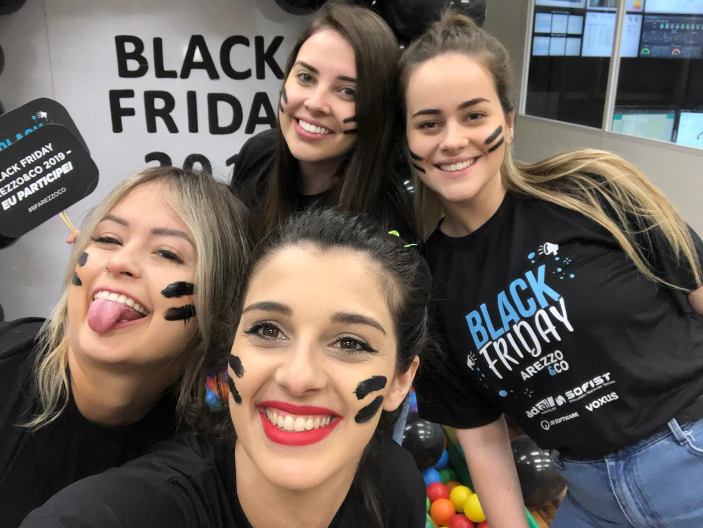

Sou uma profissional dedicada e criativa. Busco estudar bastante o trabalho a ser feito para me tornar uma referência dentro do setor, gosto de compartilhar conhecimento.
Nesses meus cincos anos de Arezzo aprendi e cresci muito profissionalmente, comecei como Atendente de SAC e em 2017 fui promovida para Social Media. Como Social Media ganhei diversos prêmios e reconhecimento.
Alguns de meus cases foram temas de palestras pelo Brasil, sendo apresentados até mesmo pelo Alexandre Birman(CEO da Arezzo). Hoje sinto que preciso de novos desafios e aprendizados. Quero desenvolver meu trabalho em uma empresa sólida que acredite ser importante humanizar o atendimento para o seu cliente.